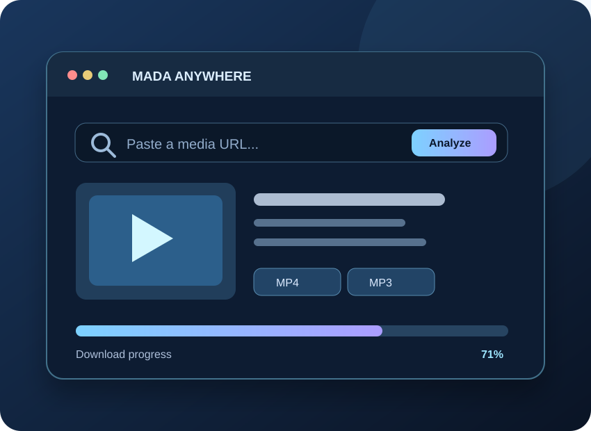

أدخل الرابط.
واختر التنزيل.
Paste a link.
Pick a format.
تطبيق متعدد المنصات لتحليل روابط الوسائط المدعومة وتنزيل المحتوى المسموح لك بحفظه، مع متابعة التقدم واختيار التنسيق والجودة عند توفرها.
A cross-platform interface for supported media links, format selection and progress tracking, for content you are authorized to save.
لا تزال نسخة تجريبية، وتتطلب بعض المنصات خادم تنزيل منفصلًا.
Experimental release. Some platforms need a separate download server.

الأدوات الأساسية
Simple, useful tools
تحليل الروابط
Link analysis
عرض معلومات الوسائط من المصادر المدعومة بمحرك yt-dlp.
Inspect supported links using yt-dlp.
فيديو وصوت
Video & audio
اختيار MP4 أو MP3 وM4A حسب توفر الجودة وFFmpeg.
Choose MP4, MP3 or M4A where supported, with FFmpeg.
متابعة التحميل
Download progress
قائمة للمهام وحالة التحميل وإعادة المحاولة.
Track queue status and retry downloads.
واجهة متجاوبة
Responsive design
واجهة PWA للهاتف والكمبيوتر؛ لا تعني وجود تطبيق APK أصلي.
PWA UI on phones and desktops; not a native APK.
خادم خاص
Private backend
دعم رمز وصول للاتصال بمحرك التنزيل عبر HTTPS.
Token-protected HTTPS connection to a private backend.
عربي وإنجليزي
Arabic & English
تعليمات تشغيل وملفات التثبيت للأنظمة المدعومة.
Bilingual setup documentation and launch scripts.
واجهة واحدة، أنظمة متعددة
One UI across devices
يختلف تشغيل محرك التنزيل عن ظهور الواجهة. خصوصًا على iPhone.
The UI and actual download engine have different requirements, especially on iPhone.
على iPhone يمكن فتح واجهة PWA وإضافتها للشاشة الرئيسية، لكن تنزيل الوسائط يتطلب تشغيل محرك Python/yt-dlp على خادم HTTPS منفصل. GitHub Pages لا يشغّل الخادم.
On iOS, the PWA can be added to Home Screen, but downloads require a separately hosted Python/yt-dlp backend over HTTPS. GitHub Pages cannot run this backend.
نزّل MADA Anywhere
Get MADA Anywhere
حمّل الحزمة وافتح ملف التعليمات داخلها لاختيار نظام التشغيل.
Download the package and follow the platform-specific README.
بعد فك الضغط، افتح README_AR_EN.md. هذه ليست حزمة تثبيت APK/IPA.
After extraction, read README_AR_EN.md. This is not an APK/IPA installer.
Linux: bash install_ubuntu_mac.sh ثم bash start_ubuntu_mac.sh.
Linux: run bash install_ubuntu_mac.sh, then bash start_ubuntu_mac.sh.
Windows: شغّل install_windows.bat ثم start_windows.bat.
Windows: run install_windows.bat, then start_windows.bat.
واجهة توضيحية وليست تسجيلًا حقيقيًا للتنزيل.
Illustrative UI; not a recorded real download.